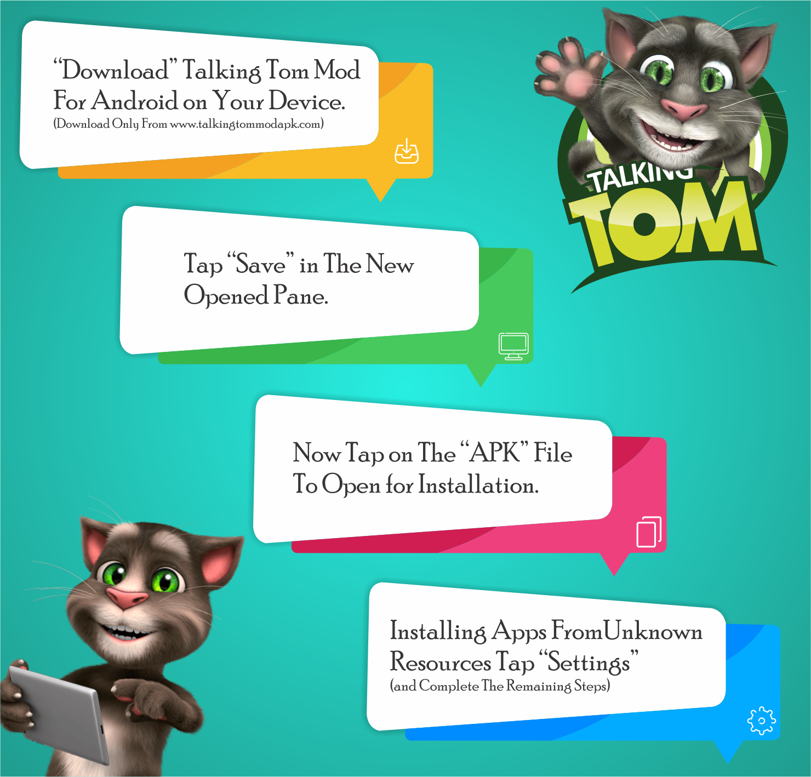

The relationship between human and non-human creature is the strongest one in the entire nature. There are number of animals that have the abilities to go with human beings without any issues and yes we all call them pets. People keep pets of their choice and according to their taste. Some of them like dogs, some of them allure the cats and different types of birds.🕊️
In this article, we are going to highlight our very own “talking tom mod apk” but before that isn’t it would be fun to know some informative facts about the pets. Just imagine you have a very dear pet at home and you are busy at work. You are not able to find out that either your pet has food or not, only this thought will damage your peace of mind at your work place and would be enough to distract you from work. That is how miss management in petting the animals can disturb your life. 😑

Contents
- 0.1 What Do You Think That all Animals are Human Friendly? 🤔
- 0.2 Talking Tom Mod Apk For Android (Unlimited Coins)
- 0.3 My Talking Tom Mod Apk Latest V5.1 For Android (Unlimited Coins/Gems/Money)
- 0.4 My Talking Tom Apk Mod Brief Information
- 0.5 How To Download Talking Tom Modded APK
- 0.6 How To Play With Your Pet?
- 0.7 Talking Tom Mod Apk Unlimited Coins Android📱
- 0.8 Talking Tom Mod Apk iOS📱
- 0.9 Talking Tom Mod Apk Latest Version PC💻
- 0.10 Talking Tom Modded Apk Pros and Cons
- 1 Talking Tom Gold Run Mod APK
- 2 FAQ’s (Frequently Asked Questions)🙋
- 2.1 Is Talking Tom Mod Apk Safe for The Kids?
- 2.2 Does Talking Tom Mod Apk Contain Ads?
- 2.3 How To Get More and Free Diamond in Talking Tom Mod Apk?
- 2.4 Is There an End To Talking Tom Mod Apk?
- 2.5 How to Get Rid of Ads?
- 2.6 Does Talking Tom Ever Die?
- 2.7 Who Is The Voice Of Talking Tom?
- 2.8 How Do I Disable Notification In Talking Tom?
What Do You Think That all Animals are Human Friendly? 🤔
To some extent we can say that animals can be friendly to the human beings, but not all of them. There is a common list of animals that are friendly with the man kind and are part of their homes from the ages. Here we are going to mention the list of those animals shortly:
- Dogs🐕
- Cats🐱
- Chickens🐔
- Pigs🐷
- Horses🐎
- Rabbits🐰
- Rats 🐭
- Parrots🦜
- Pigeons🐦
- Llamas🦙
All of these animals are entirely human friendly and even can understand the human gestures. This is the most amazing bond you will ever notice. Pet dogs are the symbol of great protection. Same is the case with other animals they always add something positive in their owner’s life. On the other hand, there is a dark side of this story which is heartbreaking. There are a lot of stories which are based on animal disowned stories. Some people adopt the pets as their status symbol and some of them do so just for the sake of pleasure for the time being. But later people from both categories just disowned the pets. 😭
Out of wandering animals’ majority of them was the home pets once. This should be stopped but in some cases owner dies and there is no one left to take care of the pets can also generate the devastating results. At this point, how would you say completely that having pets is fun? As we have seen both sides of the story. 😑
In this article, we will share a third way which will create the win-win situation for the pet lovers and for the pets. So, it’s time to move further to reveal the solution. 😇
Talking Tom Mod Apk For Android (Unlimited Coins)
According to the researches cats are the most loving pets and majority of the people want to have them as pets. Talking tom cat 2 mod apk free download is a pet simulator which will make you feel like the real pet owner. Not only will this but also let you interact with the newly born kitten that is your dependent. To make you feel like in the real world you must have to deal with all the needs of your pet, such as make him eat his favorite food, dress him the way he may look cutest and many more things which will make you feel confused that is it your real pet or not. Let your pet play with you different types of tiny games which are the best part of this application. You always have a lot of stuff to do in this application which will keeps you away from the consistency and being bored in your leisure time. 😎
One of the most amazing thing is that, you can turn this pet simulator off any time and can continue your busy life without getting worried about your pet that either he is ok or not. 😥
Talking tom mod apk unlimited coins and diamonds have flourishing features which are given below:
😻You are the owner of a tiny kitten who even doesn’t know how to handle himself on his own so feed him food which he will ask about with the help of chat balloons.
😻Train your pet for the washroom by guiding him in the easiest way.
😻Like your real world pets, talking tom mod apk unlimited money and diamond will ask you to pet him. You need to cherish him and make him relaxed. He will show you the gestures that it’s enjoying for him.
😻Turn off the lights because it’s time to sleep for your pet so, he could wake up next morning fresh and this will also help him to grow faster.
😻Wake your pet up and make him brush his teeth because it’s time to eat breakfast which is compulsory to grow up.
😻You can give fun names to your pet and call him with those names.
😻With the passage of levels you will get more and more attires and food items for your pet cat. Also, you will notice that your kitten is growing so fast.
😻A bunch of accessories like hats, glasses, and shoes can be avail to make your pet handsome in a heroic look.
😻One of the best features you will encounter is changing fur colors. You can change your pets looks even every day.
😻The exciting daily challenges are fun to deal with the help of your pet cat. The winning prizes of these challenges will help you to get more stuff for your cat such as food, clothes and whatever your cat may ask.
😻Change the home décor themes and furniture to make your pet house beautiful as well as attention grabbing. Even you can deploy every single item to check how it looks like and either it will look magnifying or not.
😻Through a birthday party for your pet, and let him enjoys the party with his friends.
😻Bought your pet different toys on his birthday and arrange the outdoor activities for him.
My Talking Tom Mod Apk Latest V5.1 For Android (Unlimited Coins/Gems/Money)
Download Talking Tom MOD (Unlimited Coins)
My Talking Tom Apk Mod Brief Information
| App Name | My Talking Tom MOD |
|---|---|
| Latest Version | 5.3.2.382 |
| File Size | 96 MB |
| Platforms | Android 4.1 + iOS 8.0+ |
| Offered by | Outfit7 Limited |
| Category | Casual |
| Updated | April 18, 2019 |
| Installs | 500,000,000+ |
| MOD Features | Unlimited Coins/Stars/Rewards |
How To Download Talking Tom Modded APK

How To Play With Your Pet?
With a single touch you can communicate with your pet. There are several games and activities which will keep you connected and engaged with your pet. Feed him with his favorite food. Your single touch to the cat can create the different effects to make this simulator more realistic and worth having experience.
Talking Tom Mod Apk Unlimited Coins Android📱
Android phones are one of the handiest devices.
Now you can get talking tom mod apk download for android with a great ease. Just follow the given below steps:
📥 This can be downloaded via the given link on our website is just a click away.
📥 Tap on the downloaded file of talking tom mod apk free download.
📥 After clicking on downloaded file of talking tom mod apk, your phone will ask you to change the security settings for third party applications.
📥 To proceed you need to turn off the restriction by uncheck the unknown sources section.
📥Its time to tap on the install button to start the process; this will take few minutes to get completed.
Talking Tom Mod Apk iOS📱
Apparently, android and IOS are opposite to each other. Talking tom 2 mod apk free download is not need to be changed because the following app will work for you to achieve the same results. So, our main concern is that is it possible to run an app on IOS which is been design for the android platform
The answer is YES.
Here is the way out in the method of having an app called “Tweakbox app”.
How does the Tweakbox app will work?
- Go grab the Tweakbox app on your IOS device by clicking on the given link on our site.
- Once download get started, enter the password if needed.
- You should have to “join Tweakbox club for free” to proceed. You can join it for free or can get a paid subscription as well. All depends upon your needs and desire.
- Once the process done, the Tweakbox app will have the similar interface like the normal play store.
- Now drag and drop talking tom mod apk unlimited food to the Tweakbox app so, you could start the installation process.
- Here is the most problematic part, where you need to have IOS9 to use apk file on IOS. Otherwise, it will not be supported and you will not be able to play with your virtual pet.
Talking Tom Mod Apk Latest Version PC💻
Here is good news for the people who are tired of using talking tom cat mod apk free download on their android phones. This pet simulator is available with the help of few simple steps.
📥 Firstly, you need to download an android emulator named “BlueStack” from the given link.
📥 Once installation done, log in with your normal Google account.
📥 Now it’s time to download talking tom mod apk for pc from the given link.
📥 Now with the method of drag and drop, talking tom mod apk unlimited everything must be start installing.
📥 After doing wait for few minutes, you are good to go, enjoy the roller-coaster ride with your cute tiny pet cat.
Talking Tom Modded Apk Pros and Cons
To know about the advantages and disadvantages of this simulation game is compulsory for all of you so, here we are going to disclose all of them for you guys.
Talking Tom Mod Apk
Pros
- The amazingly interactive game you will ever have.
- The game theme is like a dream come true of having a virtual pet.
- This is the best time killing app which will add a lot of positive vibes in your daily routine.
- A lot of diversity is there which will offer you new things every time.
- The side games are the other side of the story and all of these side games have the ability to trick your mind. With the passage of level you will see the difficulty is getting increased to keep you engaged.
- This fun game is suitable for all age groups equally.
Cons
- It will consume a lot of space in your phone.
- You might have make additional downloads to keep running the talking tom mod apk.
- Your phone battery will get drained badly.
- If you get addicted to it, you are going to waste your a lot of time which can harm you badly if you are a professional body or a student.
Nothing can beat the real pets around you but in this era of technology everyone is busy and has their busy schedules which are not as suitable for the pets as they need a proper care. Talking tom mod apk unlimited coins and gems is the bread winning solution with great features and user-friendly controls.
Talking Tom Gold Run Mod APK
The technology advancement has many sophisticated aspects, but in the entertainment industry the advancement is beyond the horizon. If we talk about the gaming which is the most famous entertainment sector among all ages. In the gaming zone that the latest advancement is 3D games which change the entire meaning of games in this era which is considered to be the era of technology. ✌️
The qualitative game change has been made because of the 3D technology integration. The gaming market is full of 3D games for different age groups but very few of them are suitable for all generations. Talking tom gold run mod apk is one of those games which is eye catching among diverse age classes👪.
Drumroll, please… 😜Check back here on Saturday for a can you #rockit surprise video!😎 https://t.co/xg5SzRomrs #MyTalkingTom2 pic.twitter.com/wNJcVmyJ7T
— Talking Tom Cat (@TalkingTomCat) March 22, 2019
If you are running lover and have the fleet feet then talking tom gold run would be the best choice for you because you don’t need to run for it but you can make run your favorite character to hunt down the burglar.
You don’t need to get confused with the talking tom original, and talking gold run as these both are entirely different from each other but have one major similarity which is the main characters.
Yes you guess it right 😁
All those virtual pets who were tiny once and you help them to grow up, now they are here to help you to get back your stolen gold.
Our most loveable couple tom and Angela gold run is not the only reason for the success of tom and gold run but the bunch of other cute characters in which talking ben, talking ginger and talking hank are included with remarkable abilities.
Man is a gaming animal. He must always be trying to get the better in something or other.
– Charles
Talking Tom Gold Run Mod Apk Unlimited Coins/Money/Gems
Tom the cat run is the running base game with endless features which make it the most leading game among the same category. The concept isn’t the only thing which is unique but its endless features which doesn’t have any sort of consistency in it. Enjoy boundless talking tom cat gold run game with subway tunnels experience. 🚇
The storyline of tom cat run game is quite interesting and unique than the other games of similar category. You are simply enjoying yourself and all of a sudden an offensive raccoon come and stole your gold bars without your permission. Now, it’s a challenge for you to rush behind the pesky mugger. 🏃
On this point you have to protect your running character from being collided because after first collision you have to start over once again. While playing tom gold run the game you may find the different objects which you need to get for the ease to get back your stolen gold bars.
Why To Prefer The Game Talking Tom Gold Run?
There is several reasons to choose talking tom free gold over the other similar games. We would like to highlight few of them for your guidance.
- Diverse range of landscapes with accordingly hurdle types make the simple gold hunt way too compelling. 🌆
- Multiple characters with extensive range of dissimilar features and talents. The characters list is given below:
-
- Angela gold run game
- Talking tom game run
- Talking tom gold run ginger
- Talking tom gold run ben
- Talking tom gold run hank
- You don’t need to be worry about your kids while playing tom gold game because of the privacy policy is based on age year. While start playing game it asks about the age of the player and automatically limit the online access during the game.🔒
- Cat gold run allows you to compete with your friends online via social media.
You should go for my tom gold run mod apk because you don’t need to spend heavy amount to get the different features enabled in your game. We are providing modified version in which every feature is available for you to free of cost. In some cases, it has been seen that many young users make purchases 💳 without their parents’ consent which is definitely awful. But in my talking tom gold run mod apk everything is free.
Top Features of Talking Tom Gold Run Modded Apk
How To Play Tom Gold Run?
Talking tom gold run gameplay is entirely guileless, anyone from any age year can play it with a great ease. You need to mention your age at the start of running tom so that your privacy policy could be set for further use. Now you are good to go, you can either build houses or can start your tom gold race with a single tap on “Go”.
Now you just need to avoid the hurdles and have to catch gold bars as much as you can to get the high score, and other rewards. You can earn more diamonds in talking tom gold run game by completing the missions related to gold hunt and house building. 🏡
How To Get Talking Tom Gold Run Game Download?
Tom gold run free download 📥is available for different operating systems and gadgets. You can do talking tom gold run install for any android platform directly from the given links, but you need to make a little bit of modifications on your gadget in case your operating system is windows (7, 8, 8.1, and 10) based or IOS.
To get to know more about the downloading method, do visit our main page of talking tom gold run mod apk.
Talking tom gold run new update is full of new and thrilling things to do which is good news for all those who reached already on my talking tom the end level. The size of tom gold run apk varies from android version to version. Talking tom cat gold run provides user flexibility which means user can customize the major features like notifications, sound effect and vibration mode.
Tom and gold is one of the best gold run app which suits a huge number of audience. For further details about the talking tom 2 gold run, make a visit to our main page by clicking on the given link above.
FAQ’s (Frequently Asked Questions)🙋
Is Talking Tom Mod Apk Safe for The Kids?
Talking tom mod apk is a safe game for your kids as it doesn’t contain any sort of violent graphics, or features, but we will highly recommend that parents should have to pay attention while their kids playing this game because social media connectivity might be risky for the under-age kids.
Does Talking Tom Mod Apk Contain Ads?
No, it doesn’t contain any ads which will divert your attention as we have brought you the modified version of this game. So, enjoy the ads free journey and have an amazing time with your cutest pet buddy.
How To Get More and Free Diamond in Talking Tom Mod Apk?
Free diamonds are something which you can get by doing in app purchases which might results in additional cost. But here is good news for you we are providing talking tom mod apk which is free of cost due to being a modified version. Enjoy the unlimited everything with this amazing app.
Is There an End To Talking Tom Mod Apk?
There isn’t any end of this tremendous pet simulator game. So, you can enjoy this endless fun which will get more interesting with the passage of levels.
How to Get Rid of Ads?
Just download my talking tom mod apk from the given link above which will take you away from the tiredness of ads.
Does Talking Tom Ever Die?
No, talking tom will never die so; this is the most remarkable thing that your pet cat will never let you feel alone.
Who Is The Voice Of Talking Tom?
Colin hanks, one of the most well-known and multi-talented name of the entertainment industry. Being a person from the rich and acting skilled family Colin hanks have done a lot of projects. Talking tom is one of his successful projects.
How Do I Disable Notification In Talking Tom?
Talking tom mod apk will issues the notification alerts about new activity to remind you but in case, you don’t want to get those notifications and feels like disturbed. Follow the given below steps:
- Click on the game settings button.
- Scroll down and find out push notification button.
- Simply turn this off and get rid of notifications.